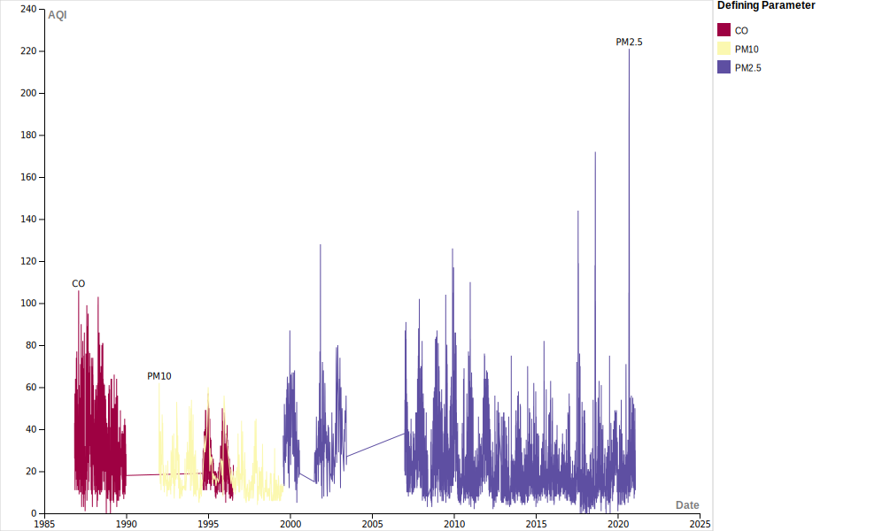

Air quality emissions in Kitsap County, WA
Effects of Climate Change
Different regions of the United States have already started to feel the varied impacts from climate change. Natural disastors in the form of hurricanes, tornados, flooding and fires besieged the United States in the summer of 2021. The Washington Post reported that nearly 1 in 3 Americans experienced a weather disastor over the course of the summer. Recent maps have shown prolonged drough in the west and highly abnormal rain in the east.
Smoke season, a term coined by West Coasters, describes a new reoccuring phenomenon. The smokiness which has now become an annual occurance, appearing sometime between July and October, only started a few years ago. However, the west's smoke season doesn't just affect areas surrounding the fires. Photographs from July, 2021 show images of New York City blanketed in smoke from the West Coast.
 Image from Bloomberg
Image from Bloomberg
Changing environments
This visualization below shows daily air quality measurements in Kitsap County, Washington over the last 40 years. Data were collected by the EPA and can be found here.
There are many different polluants which contribute to bad air quality:
- Carbon monoxide (CO)
- Major sources of CO: cars, trucks, and other machinery that burn fossil fuels
- Sulfur dioxide (SO2)
- Major sources of SO2: the burning of fossil fuels by power plants and other industrial facilities
- Nitrogen dioxide (NO2)
- Major sources of N02: cars, trucks, buses, and power plants
- Particulate matter 2.5 (PM2.5)
- Major sources of PM2.5: dust, soot, smoke, salt, and acid
- Particulate matter 10 (PM10)
- Major sources of PM10: construction sites and dust
Measurements from the last 40 years indicate it is not uncommon for air quality to fluctuate over the course of a year. However, what is striking in the above visualization is the change in dominant pollutants. Prior to the year 2000, carbon monoxide and PM10 were frequently the dominant polluants. In the last 20 years, PM2.5 has become the dominant pollutant.
As PM2.5 has taken the center stage overall air quality has also declined. Higher values indicate worse air quality, for example 0 - 50 is considered good. Below is a table showing how the index translates to overall air quality.
| Category | Range |
|---|---|
| Good | 0-50 |
| Moderate | 51-100 |
| Unhealthy for sensitive groups | 101-150 |
| Unhealthy | 151-200 |
| Very unhealthy | > 200 |
What is particulate matter?
Particulate matter (PM) includes soot, smoke, dust, salt, acid, and metals. The numeric value after PM refers to the diameter of the average particulate. The average particulate in PM2.5 is less than 2.5 micrometers and the average particulate in PM10 is less than 10 micrometers. This has significant implications for human and animal health since smaller particles are able to penetrate more deeply into respiratory systems.
 Image from Lung.org.
Image from Lung.org.
This study found that PM is associated with chronic obstructive pulmonary disease, bronchial asthma, and other respiratory diseases. Additionally, PM increases the mortality rate.
The story of smoke season isn't just about the destruction of the built and natural environment. It's also a story about our health.